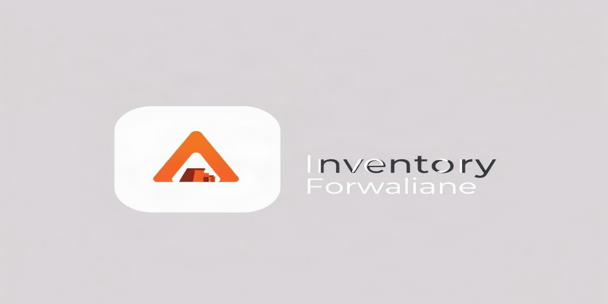

AI-powered demand forecasting, supplier scoring, stockout alerts, and replenishment planning for Odoo 18.
Transform your supply chain operations with intelligent forecasting and analytics. This module brings together five complementary AI-driven tools that help you anticipate demand, evaluate suppliers, prevent stockouts, understand demand patterns, and optimize replenishment.
Predict future product demand using moving average, exponential smoothing, or ML ensemble methods. Track forecast accuracy and AI confidence per period.
Score suppliers on on-time delivery, quality, cost index, and risk. Receive AI-generated recommendations to improve supplier relationships.
Get early warnings for products at risk of stockout. AI assigns low, medium, high, or critical risk levels with estimated days until stockout.
Classify demand into trend, seasonal, cyclical, or irregular patterns. Quantify seasonality index and trend slope with AI confidence scoring.
Generate replenishment plans with AI-optimized order quantities based on current stock, lead time, and demand signals. Track plans through draft, approved, ordered, and received states.